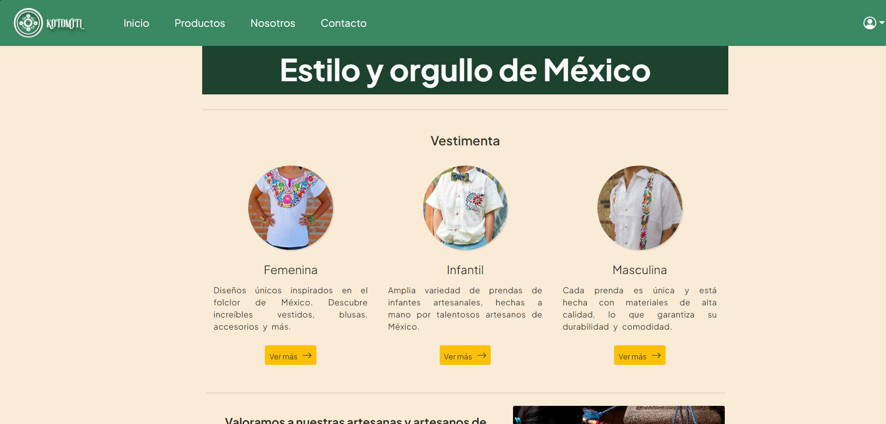
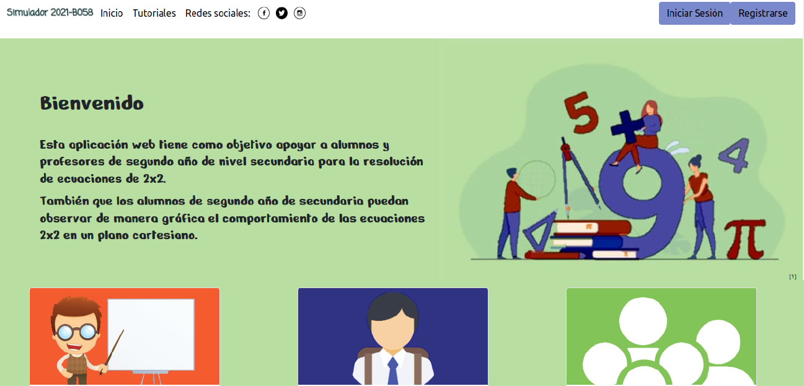

Proyectos

Face Mask Advisor
Aplicación que surgió gracias a las nuevas necesidades que ha traído consigo la pandemia que se vivió, tiene como finalidad llevar un control del acceso del personal a través de la detección en tiempo real con ayuda de una cámara, con estadísticas sobre el correcto uso del cubrebocas por parte del personal.

E-commerce Kotomitl
Aplicación web de un E-commerce sobre venta de ropa artesanal mexicana.

Simulador 2021-B058
Aplicacion web que tiene como objetivo apoyar a alumnos y profesores de segundo año de nivel secundaria para la resolución de ecuaciones de 2x2.